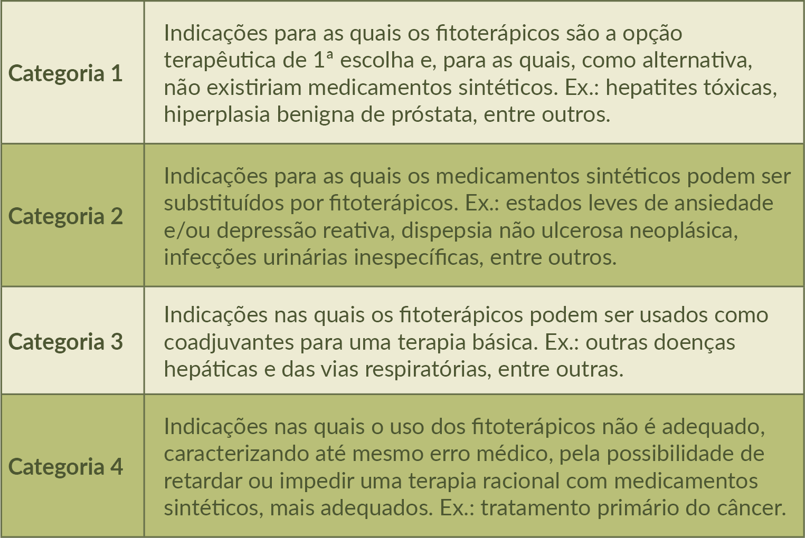

O quadro a seguir tem por objetivo orientar o prescritor quanto ao uso seguro dos fitoterápicos em suas prescrições, salientando que a escolha terapêutica poderá estar embasada na utilização como terapia principal/única, complementar ou ainda, quando a condição clínica não deva ser tratada com fitoterápicos.
Categorias terapêuticas para fitoterápicos.

Fonte: Práticas integrativas e complementares: plantas medicinais e fitoterapia na Atenção Básica (Brasil, 2012).